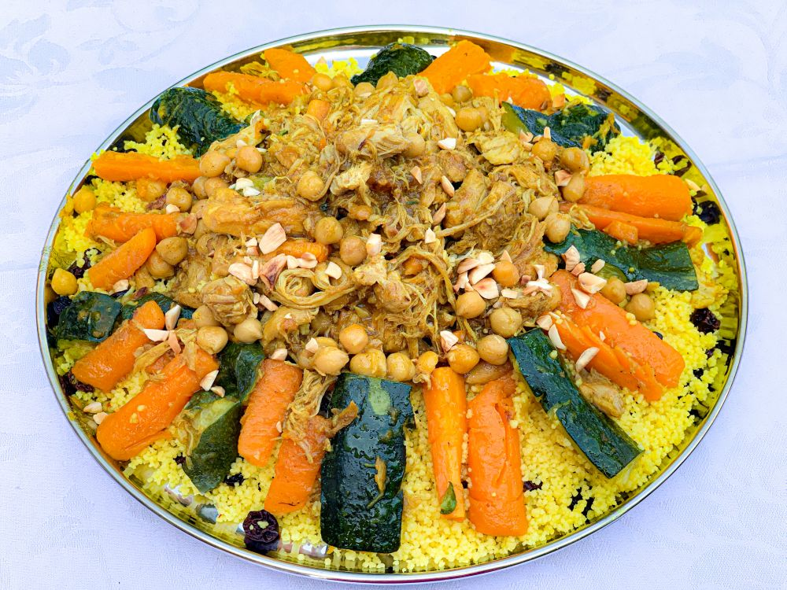

Algerijnse Couscous
Een heerlijk traditioneel Algerijns gerecht met gestoomde couscous, malse groenten en sappig vlees. Perfect voor een gezellige maaltijd met familie of vrienden.

Een heerlijk traditioneel Algerijns gerecht met gestoomde couscous, malse groenten en sappig vlees. Perfect voor een gezellige maaltijd met familie of vrienden.